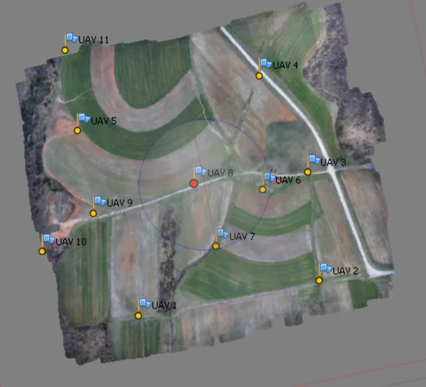
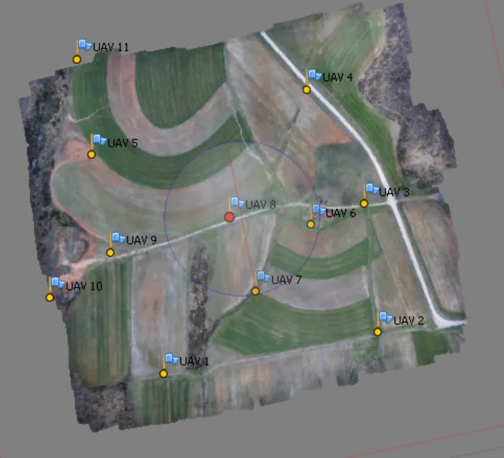
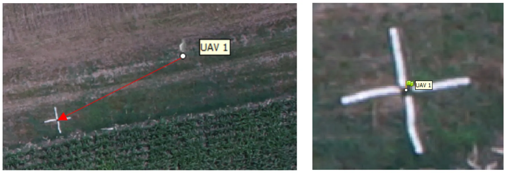
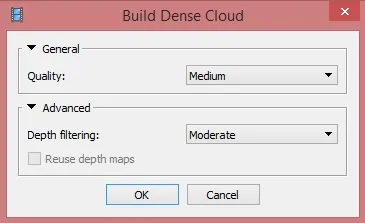

Assignment 2B
B. Imagery processing and structure from motion (SfM)
Geoprocessing of the UAS data
Completing this assignment you will generate orthomosaic and Digital Surface Model using pictures taken from the UAS Trimble UX5 Rover (Flight mission executed on September 22nd 2016). The Study area is located at Lake Wheeler COA. Additionally you will be able to see the processing results in the generated report and optionally you will be able to export also 3D model and Point cloud as well as Camera calibration and orientation data.
The process can be very time consuming (depending on computational power of your device and desired quality). In order to minimize the processing time, we will process only fraction of the data collected and we will use imagery downsampled by 50%. It will allow us to generate outputs in the classroom.
General workflow (with GCPs)
Preparation
- Stage 1: Building simple geometry (in order to place GCPs)
- Stage 2: Placing GCPs
- Stage 3: Building complex geometry
- Stage 4: Exporting results
Preparation
Data
- OPTION 1: Small area (to accelerate processing), but photos not downsampled (to obtain the highest resolution of the outputs)
- download data - photos, log and coordinates of 3 GCPs
- Processing outputs from this option are provided here
- OPTION 2: Full flight, photos original resolution
LONG PROCESSING TIME!- download data - photos, log and coordinates of 12 GCPs
- OPTION 3: You can use your own data
Software
- Agisoft Metashape Professional (installer)
Preferences
When launching Metashape for the first time, some settings need to be adjusted to optimize performance. These settings need to be done only once, at the first use of Metashape, and are loaded by default in subsequent sessions.
Menu > Tools > Preferences
General tab:
- Leave default (optional – write log to file: enabled, if you want to save the txt log file)
GPU tab:
- Check the “USE CPU when performing GPU accelerated processing” option at the bottom
Appearance Tab:
- Leave default (or adjust to personal taste)
Navigation Tab:
- Leave default (or adjust to personal taste)
Advanced tab:
- Project Files
- Keep key points: disabled
- Keep depth maps: disabled
- Store absolute image paths: disabled
- Export/Import: enable all
- Miscellaneous:
- Enable fine level task division: enabled

Stage 1: Aligning photos in low quality (in order to place GCPs)
In order to localize the GCPs first a preliminary simple model needs to be built.
Adding photos
Menu > Workflow > Add Photos
Indicate the path to the folder (downloaded data) containing photos and select them all. In the Reference pane, you can see that the photos have been loaded, but the coordinate system indicates local coordinates. It can be changed in the Settings. Click the settings icon  > change coordinate system to WGS 84 (EPSG:4326).
> change coordinate system to WGS 84 (EPSG:4326).

Loading camera positions
Click Import button  on the Reference pane toolbar > select file containing camera positions information (log file*) in the Open dialog.
on the Reference pane toolbar > select file containing camera positions information (log file*) in the Open dialog.

*Agisoft supports the camera orientation files in 5 formats: .csv, .txt, .tel, .xml, and .log. The default format of the Trimble Aerial Imaging log is .jxl. In order to convert the Trimble .jxl log file please run script by Vaclav Petras or use provided already converted log in .txt format.
Make sure that the columns are named properly – you can adjust their placement by indicating column number (top right of dialog box).
Aligning photos
- Accuracy: Low
- Check: Reference preselection
- Key point limit: default
- Tie point limit: default
- Adaptive camera model fitting: enabled
Menu > Workflow > Align Photos

Click Save  in the toolbar.
in the toolbar.
Stage 2: Placing GCPs
Loading the GCPs coordinates
Click Import button  on the Reference pane toolbar > select file containing Ground Control Points coordinates in the Open dialog.
on the Reference pane toolbar > select file containing Ground Control Points coordinates in the Open dialog.

Make sure that the columns are named properly – you can adjust their placement by indicating column number (top right of dialog box). This time you uncheck the Rotation box since GCPs are stationary and do not need determining yaw pitch and roll angles.
The window with the message: Can’t find match for ‘UAV 3’ entry. Create new marker? will pop up.

Choose ‘Yes to All’ – it will create new marker for each of the named GCPs from the file. They will be listed in Reference pane under the list of photos.
Indicating GCPs on the pictures
Now you need to find each of the GCPs and indicate its localization on all photos depicting it. You can also see the process on the instructional video.
The Model pane shows approximate positions of GCPs, it is better visible if the ‘Show cameras’ option is disabled (Menu > View > Show/Hide Items > Show cameras).
 

Choose in the context menu of the selected point on the list (right click) > Filter Photos by Marker.

In the Photos pane appear only the images in which the currently selected GCP is probably* visible.
*This is possible because our pictures are geotagged (log indicates the position of each photo), if you will be working with the pictures that are not geotagged or in the area that you don’t know and are not able to “guess” which photo depicts which GCP, it is useful to build the dense point cloud or even mesh and texture (see the following steps) to see the preliminary model of the area in the Model pane, not just a sparse cloud (this is depicted on the figures above).
Open an image by double clicking the thumbnail. It will open in a tab next to the Model pane. The GCP will appear as a grey icon  . This icon needs to be moved to the middle of GCP visible on the photo.
. This icon needs to be moved to the middle of GCP visible on the photo.

Drag the marker to the correct measurement position. At that point, the marker will appear as a green flag, meaning it is enabled and will be used for further processing.
Double click on the next photo and repeat the steps. As soon as the GCP marker position has already been indicated on at least two images, the proposed position will almost exactly match the point of measurement. You can now slightly drag the marker to enable it (turning it into a green flag) or leave it unchanged (gray marker icon) to exclude it from processing.
Filter photos by each marker again. Agisoft adjusts the GCPs positions on the run, so you can locate the GCP on additional images that will appear in the Photos pane.
In this sample processing we will include 4 GCPs. Mathematically, you need to indicate marker positions for at least 3 GCPs. Accurate error estimates can be calculated with at least 4 GCPs, while often at least 5 are needed to cover the center of the project as well, which reduces the chance of error propagation and resulting terrain distortions especially on flat or undulating terrain types.
Click Save  in the toolbar.
in the toolbar.
Optimizing alignment
You can see the errors by clicking on the View Errors icon  . Best results are obtained when the alignment is first optimized based on the camera coordinates only, and a second time based on the GCP only.
. Best results are obtained when the alignment is first optimized based on the camera coordinates only, and a second time based on the GCP only.
Click Optimize icon  in the Ground Control toolbar (check all the boxes).
in the Ground Control toolbar (check all the boxes).
Optimizing based on the GCP Markers
In the Ground Control pane:
- disable all the camera coordinates (select one > press Ctrl+A > right-click > choose Uncheck).
- enable all the GCP Marker coordinates (select one > press Ctrl+A > right-click > choose Check).
Click Settings icon  in the Ground Control toolbar:
in the Ground Control toolbar:
- leave the default values (Marker accuracy (m) = 0.005 m)
Click Optimize icon  in the Ground Control toolbar (leave all options at the default).
in the Ground Control toolbar (leave all options at the default).
Click Save  in the toolbar.
in the toolbar.
You can now see how much the errors were reduced through optimization by clicking on the View Errors icon  .
.
Stage 3: Building complex geometry (for quality processing)
Before starting the Build Dense Cloud step it is recommended to check the bounding box of the reconstruction (to make sure that it includes the whole region of interest, in all dimensions). The bounding box should also not be too large (increased processing time and memory requirements).
The bounding box can be adjusted using the Resize Region  and the Rotate Region tool from the toolbar. Make sure that the base (red plane) is at the bottom.
and the Rotate Region tool from the toolbar. Make sure that the base (red plane) is at the bottom.

The next steps will be time consuming (depending on the desired quality and number of pictures). You can execute them one step at the time, what would be explained below. You can also set a batch processing that does not require user interaction until the end of geoprocessing (especially useful in case of Ultra High quality that requires even several days of processing). The batch processing will be explained at the end of this section.
Menu > Workflow > Build Dense Cloud
- Quality = Medium*
- Medium (will downsample the images to get a 3D coordinate every 4 pixels)
- High (will downsample the images to get a 3D coordinate every 2 pixels; typically takes several hours but will give acceptable results for most cases)
- Ultra high (will calculate a 3D coordinate for every pixel in original imagery; may take more than a day or several days)
- Depth filtering = Aggressive
*When working with large datasets take into consideration the RAM size requirements for the different target qualities with respect to the number of images (in appendix in the manual or in lecture slides).

Click Save  in the toolbar
in the toolbar
Menu > Workflow > Build Mesh
- Surface type: Height field
- Source data: Dense cloud
- Face count: Medium
- Advanced options: leave default
Face count set at “0” means that Metashape will determine an optimum number of faces (but this may not be enough to describe all the features on terrain)

Menu > Workflow > Build Texture
- Mapping mode: Orthophoto
- Blending mode: Mosaic (default)
- Texture size/count: 4096
- Enable color correction: disabled (unchecked)
Click Save  in the toolbar
in the toolbar

Editing geometry
Sometimes it is necessary to edit geometry before building texture atlas and exporting the model.
If the overlap of the original images was not sufficient, the model can contain holes. In this case, to obtain a holeless model, use the Close Holes command. It is crucial if you want to perform any volume calculations - in this case, 100% holes need to be closed.
Menu > Tools > Mesh > Close Holes
In the Close Holes dialog, select the size of the largest hole to be closed (in percentage of the total model size). DO NOT CHOOSE 100% unless you are calculating volumes (then you have to close 100% holes)

This does not apply to our data, since we have sufficient image overlap. But due to strong dependency on weather conditions, the holes in data are common with UAS.
Building DEM
Menu > Workflow > Build DEM
In this step, the parameters of the exported DEM are determined. In order to work in the commonly used in NC reference system, we will not keep the project’s WGS84 system, but change it to NC State Plane (ESPG:3358).

Building Orthophoto
Menu > Workflow > Build Orthophoto
Orthophoto can be built only in the same coordinate system as the DEM.

Batch processing
Menu > Workflow > Batch process > Add
Batch processing allows setting multiple processes in the preset order and executing them one after another without user intervention. All the parameters should be set the same as explained above.
- Optimize Alignment (if the GCPs were placed but the optimization not performed, otherwise: skip)
- Build Dense Cloud
- Build Mesh
- Build Texture
- Build DEM
- Build Orthophoto

Stage 4: Exporting results
This option will be disabled if you are working in the demo version.
Orthomosaic
File > Export Orthophoto > Export JPEG/TIFF/PNG…
- Projection Type = geographic (default)
- Datum = WGS 1984
- Write KML file (footprint) and World file (.tfw) = check if desired (if left unchecked, georeferencing information will still be contained in the GeoTIFF .tif file)
- Blending mode = Mosaic (default)
- Pixel size: leave default

Leave default values. Fill out the desired name and save as type TIFF/GeoTIFF (*.tif).
Digital surface model
Menu > File > Export DEM…

Leave default values. Fill out the desired name and save as type TIFF/GeoTIFF (*.tif).
Generating report
Menu > File > Generate report
Indicate the name and path for the PDF file.
Processing outputs from OPTION 1 (downsampled images) are provided here.
The following export steps are optional.
Model
Menu > File > Export model > OBJ/FBX/KMZ…
Indicate the name, path, and format of the output model.
Metashape supports model export in the following formats: Wavefront OBJ, 3DS file format, VRML, COLLADA, Stanford PLY, STL models, Autodesk FBX, Autodesk DXF, Google Earth KMZ, U3D, Adobe PDF. Some file formats (OBJ, 3DS, VRML, COLLADA, PLY, FBX) save texture images in a separate file. The texture file should be kept in the same directory as the main file describing the geometry.
3D Models are a great visualization tool. Model generated by following the assignment instructions as well as model from full flight processing can be viewed on Sketchfab.
Point cloud
Menu > File > Export points…
Indicate the name, path, and format of the output file.
Metashape supports point cloud export in the following formats: Wavefront OBJ, Stanford PLY, XYZ text file format, ASPRS LAS, ASTM E57, U3D, Potree, Metashape OC3, PDF.
Camera calibration and orientation data
Menu > Tools > Export > Export Cameras
Indicate the name, path, and format of the output file.
Metashape supports camera data export in the following formats: Metashape structure file format (XML based), Bundler OUT file format, CHAN file format, Boujou TXT file format, Omega phi Kappa text file format, PATB Exterior orientation, BINGO Exterior orientation, AeroSys Exterior orientation, Inpho project file.